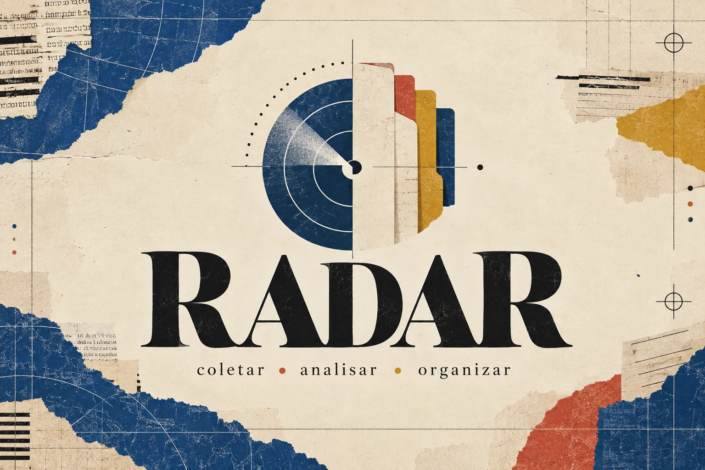
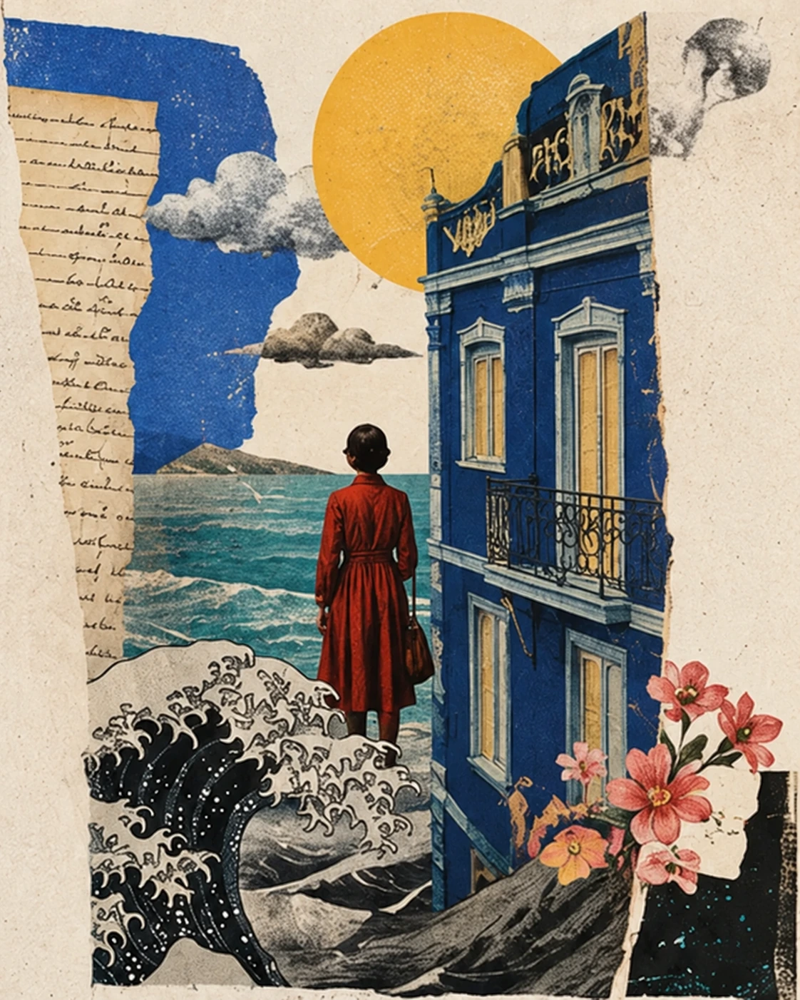
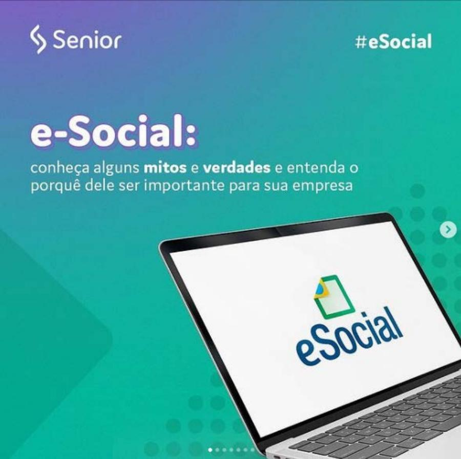
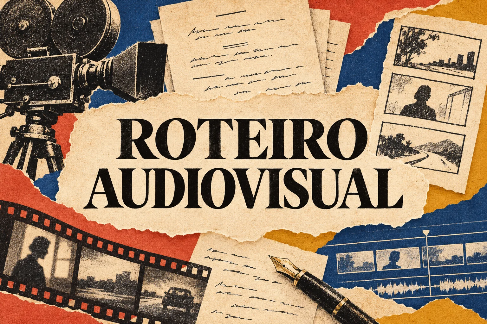

SOFTWARE · CURATION · VIBE CODING
Radar de Curadoria
Software developed to collect, analyze and organize information from web pages. It combines content curation, SEO and GEO analysis, image analysis and product page quality assessment.
WRITING · RESEARCH · EDITING
I write and edit for brands, businesses and editorial projects, with work spanning marketing, journalism, audio and video.
Explore my work ↘
01 / SELECTED WORK

SOFTWARE · CURATION · VIBE CODING
Software developed to collect, analyze and organize information from web pages. It combines content curation, SEO and GEO analysis, image analysis and product page quality assessment.

PRODUCT · E-COMMERCE · EDITING
Writing and editing product copy. SEO and GEO optimization, critical review of AI-generated text and editorial curation of catalog pages.

JOURNALISM · REPORTING
An article on research, social life and homosexuality in rural Rio Grande do Sul, published in Revista Arco.
NEWSLETTER · INTERNAL COMMUNICATION · EMAIL
Planning and writing newsletters for employees and customers. Internal and corporate communication combining company news with editorials on culture and everyday life.


LANDING PAGES · BLOG POSTS · SOCIAL MEDIA
Campaign planning and content strategy for blogs, email, landing pages and social media, with B2B and B2C work for an agency and an enterprise software company.

TRANSMEDIA JOURNALISM · AUDIO/PODCAST
A transmedia journalism project about the stories of people living with mental illness, bringing together a podcast, curated content and street posters.

PODCAST · CINEMA · 2013 / 2014
A university podcast about cinema. Co-creation, topic research and curation, scriptwriting, production and hosting.

VIDEO ESSAY · INSTITUTIONAL
Writing, narration and editing for a video essay on cinema. Story concept, co-writing and assistant directing for an institutional video.
02 / HOW I WORK
Understand the subject, sources and audience before writing.
Organize the information and define what each piece needs to achieve.
Create content, formats and solutions, exploring ideas and adapting language to each context.
Review the writing for clarity, accuracy, consistency and quality.

03 / ABOUT ME
I write, create, edit, plan and organize ideas. Writing began in my childhood notebooks and became my profession as I grew up.
My grounding as a communicator is in science and cultural journalism. I develop content from scratch, organize technical information and rework existing copy, across a range of subjects, formats and styles.
I pay attention to how a story is built, what an image can say and how replacing one word with another can change the meaning. Many of my ideas begin there, before I know whether they will become a piece of writing, research or a project.
The work collected here offers a glimpse of what I can do professionally and a small sample of what interests me as a person.
04 / LET’S TALK
For job opportunities, editorial projects and requests for work samples:
ninaspaniak@gmail.com ↗